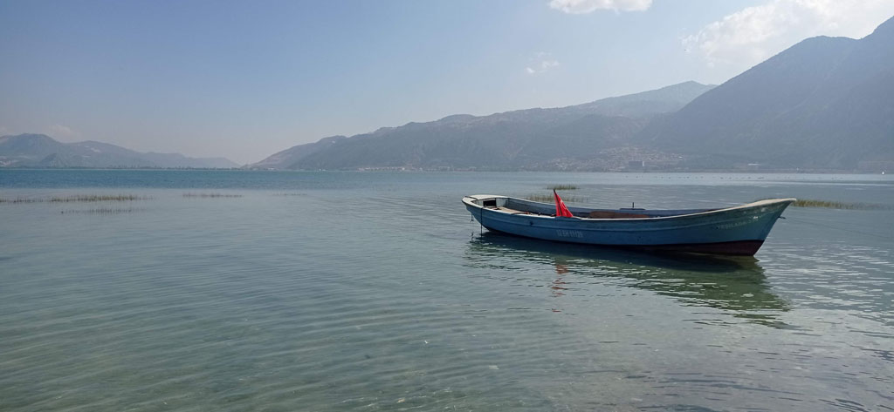
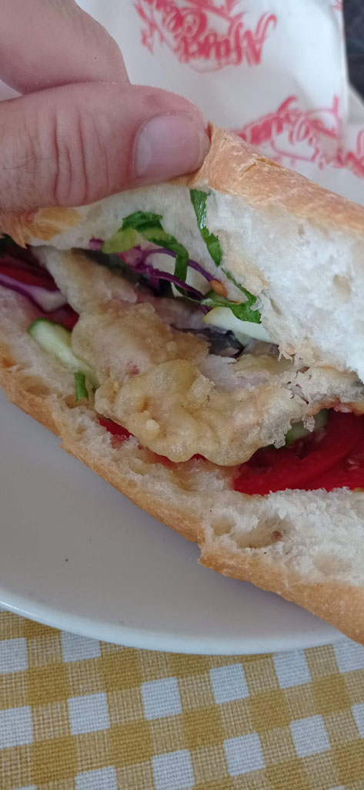
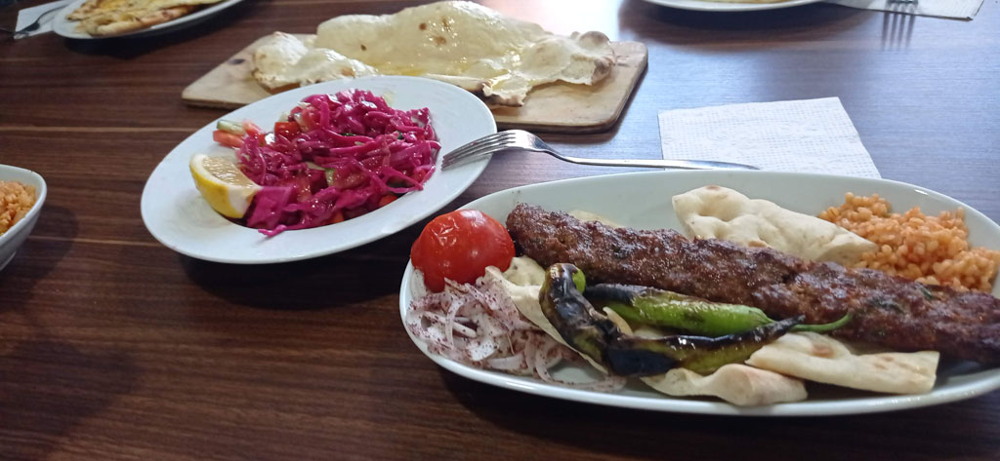
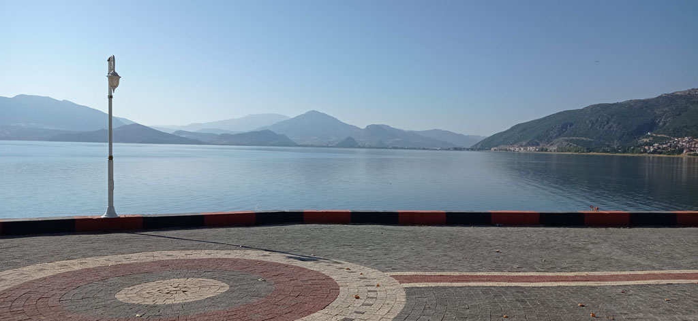

Turquie 2023 / Eğirdir

7h45 réveil
8h00 petit déjeuner après avoir bouclé les sacs.
9h00 départ après avoir réglé la note. Nous prenons le mini bus pour Denizli. Arrivés à la gare routière un gentil monsieur nous emmène auprès de la bonne compagnie pour poursuivre notre voyage.
10h30 Départ pour Isparta
13h20 On arrive à la gare routière centrale. On négocie un taxi pour faire les 30 km qui nous séparent de Eğirdir
14h00 trouvons un hôtel sur la presqu’ile (au début).
14h15 on part directement en balade faire le tour de la presqu’ile, on trouve qq cafés froids e ncanette
15h20 Arrêt dans une gargote pour manger face à l’eau.

17h00 passage rapide par l’hôtel après avoir repéré la gare routière pour le lendemain.
17h15 Arrêt çais dans le café municipal/associatif (il faut aller au comptoir), on prendra 8 çais pour 24 TL
On passe ensuite au supermarché, renouveler stock d’eau et de provisions pour le lendemain.
19h00 On teste un restaurant, le Haci Aladdin Tandir Salonu.
20h00 face au lac dans une petite gargote, on regarde le soleil se coucher en buvant des çais.

